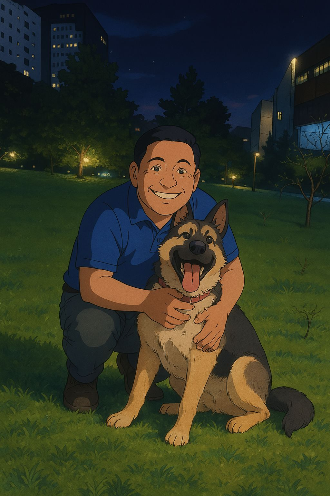
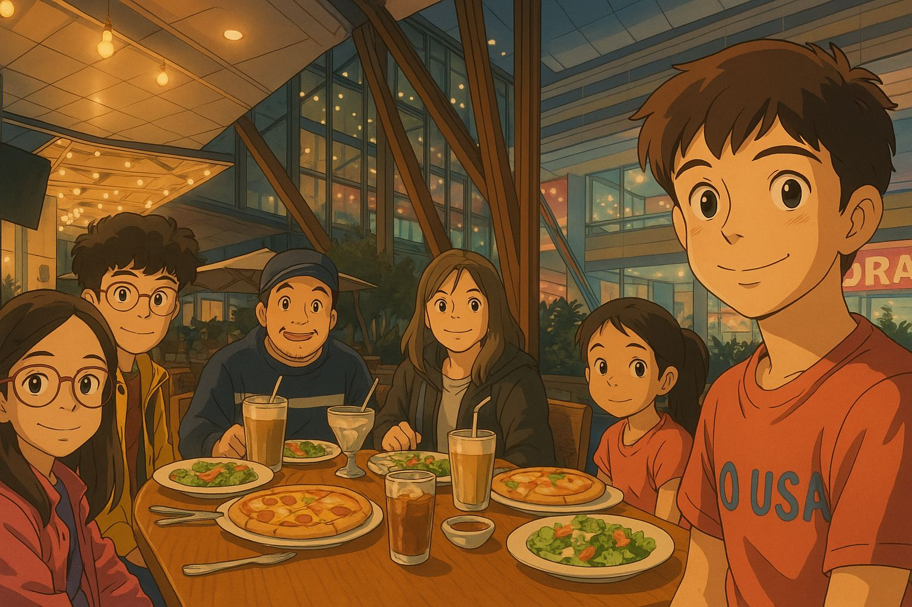
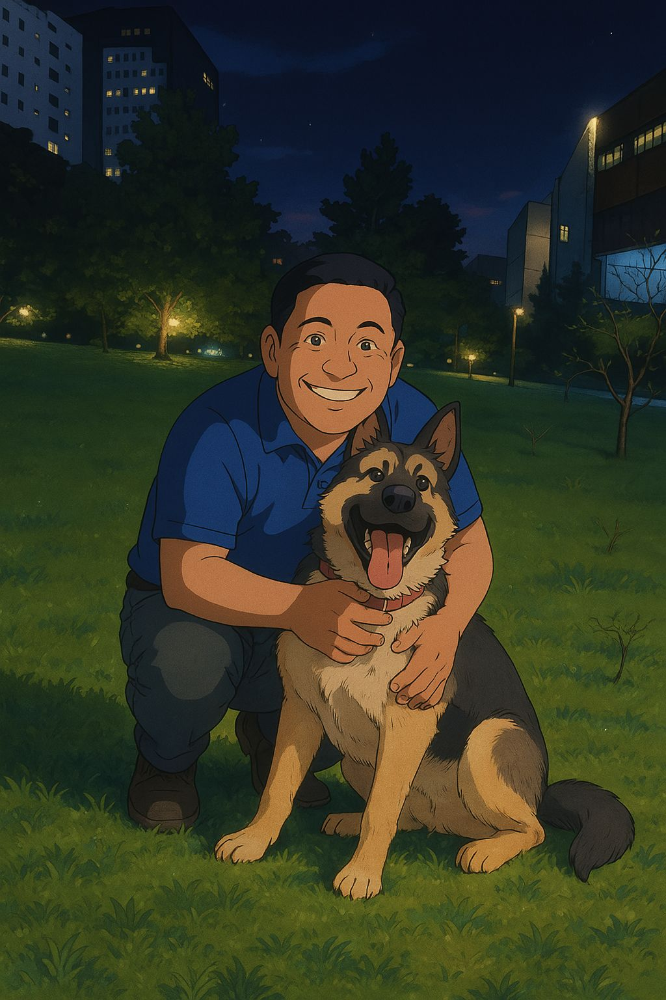
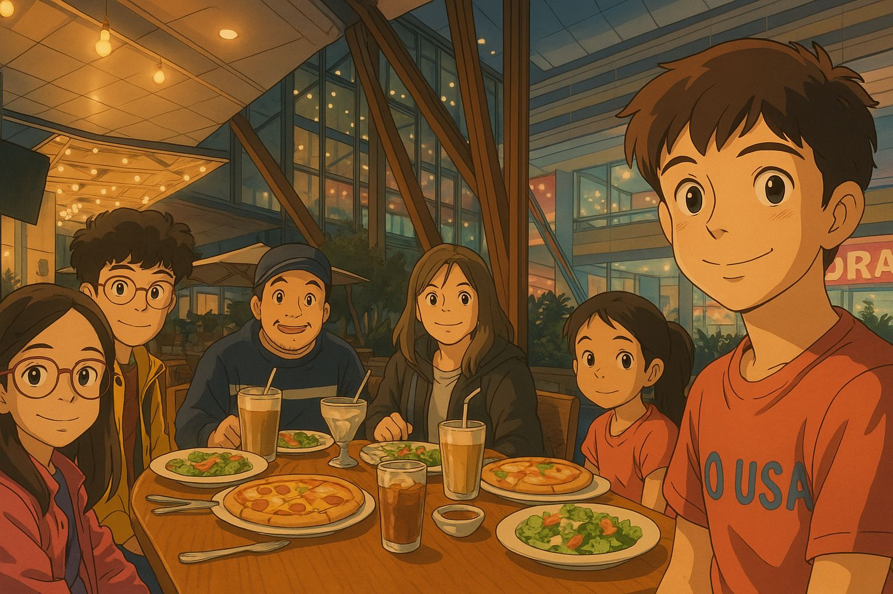
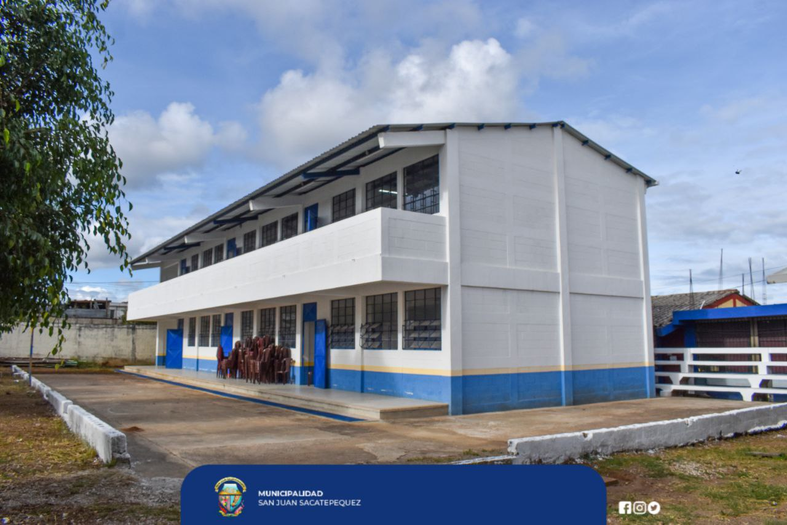
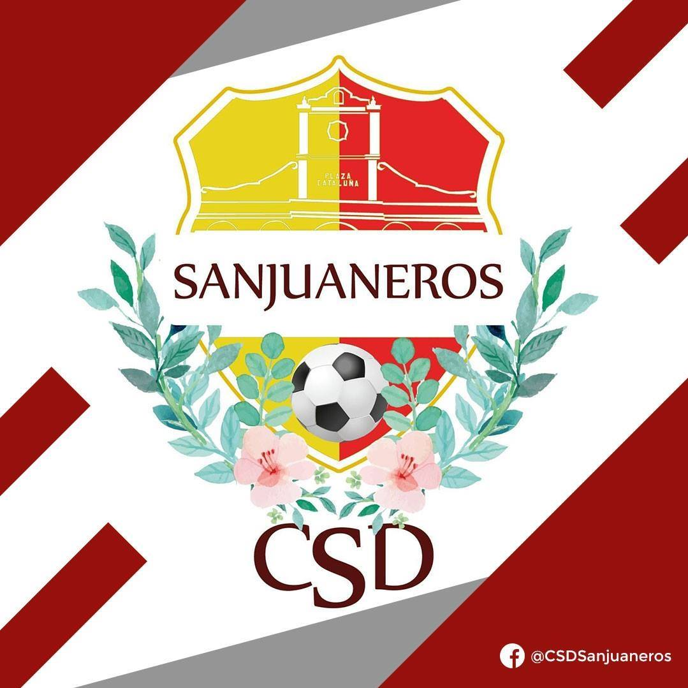
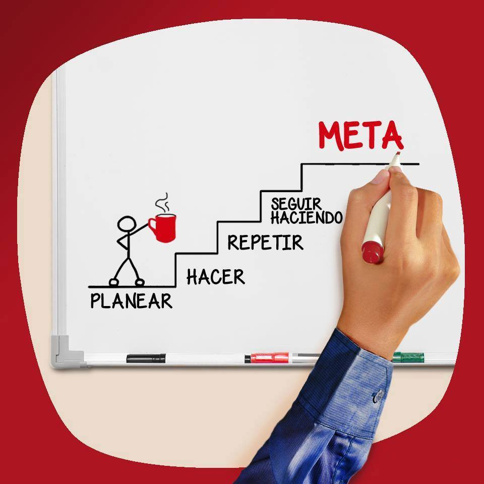
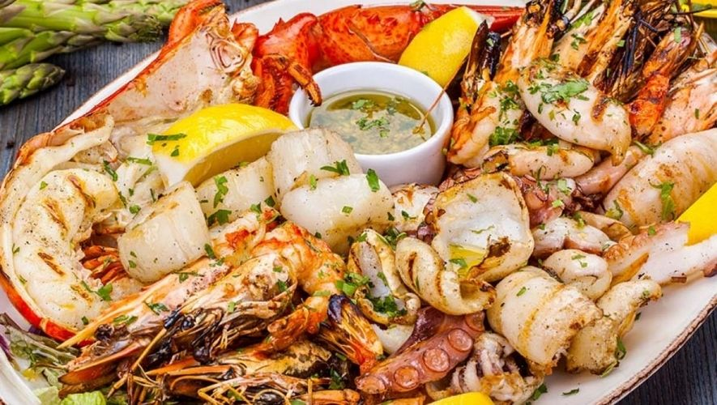
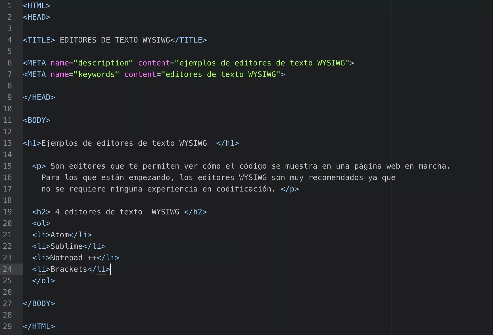

Edad y Residencia
Edad: 19 años
Ciudad: Ciudad de Guatemala
Historia Familiar
Mi familia está conformada por mi mamá, quien trabaja como secretaria, y mis hermanos, dos hermanas y un hermano. Mi papá fue un empresario y periodista reconocido, cuya trayectoria ha sido una gran influencia para mí.
 



Niñez
Crecí en un entorno humilde pero lleno de enseñanzas. Estudié mi primaria en una escuela pública, donde aprendí valores como el esfuerzo, el respeto y la disciplina.
Adolescencia
Durante mi adolescencia, el fútbol fue una parte muy importante de mi vida. Jugué en varios equipos y desarrollé habilidades de trabajo en equipo, perseverancia y disciplina.
Académico
Cursé los niveles básicos y diversificado en el Colegio San Gabriel, donde seguí la carrera de Diseño Gráfico. Esta experiencia me motivó a continuar mis estudios en sistemas de información.
Metas
Mi meta es ser alguien en la vida, crecer como persona y como profesional. Aspiro a destacar en el campo de la tecnología y contribuir con soluciones útiles para la sociedad.
Pasatiempos
Mis pasatiempos favoritos son jugar fútbol y escuchar música. Me ayudan a relajarme y mantenerme enfocado.
Gustos y Disgustos
Me gusta compartir con mi familia y amigos y disfrutar de las pequeñas cosas de la vida. No me gustan los mariscos.
Conclusión
Este proyecto me permitió combinar el conocimiento básico de desarrollo web con la oportunidad de expresarme a través de mi autobiografía. Aprendí a organizar mi información personal, usar etiquetas HTML y comprendí el proceso de publicación web. Estoy satisfecho y motivado a seguir aprendiendo.
